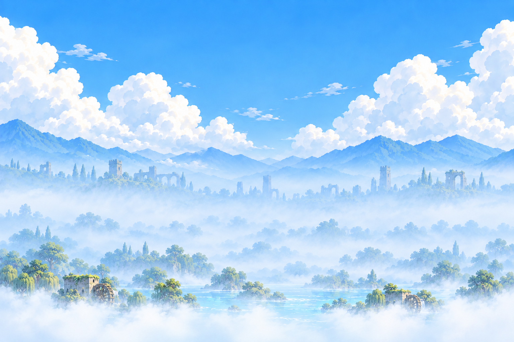
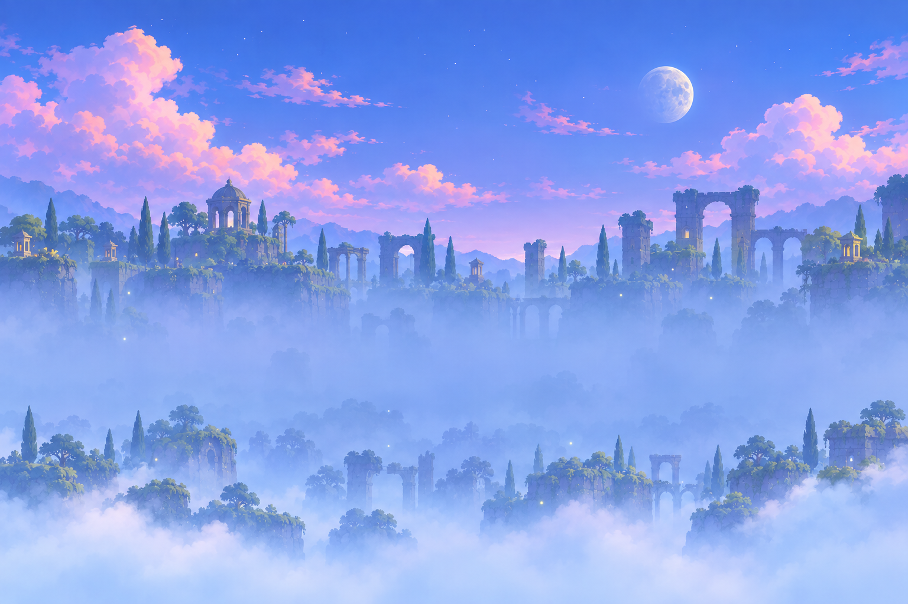
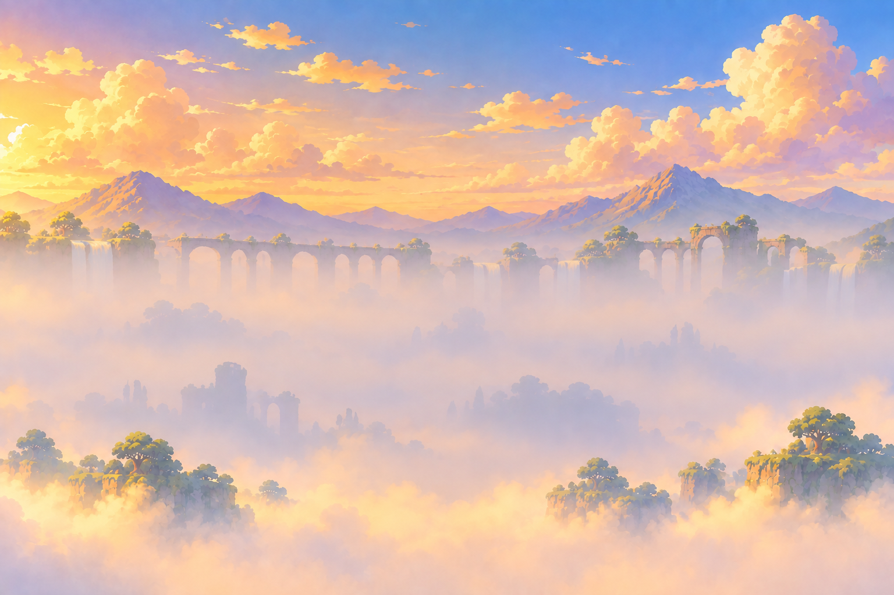
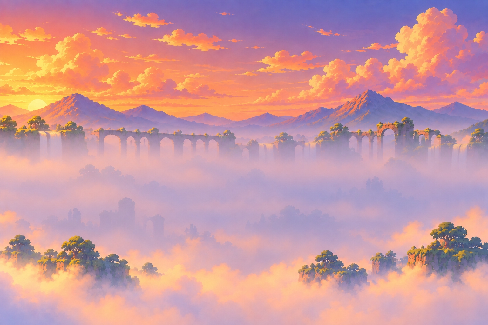

Графика уровней 11–20
42 исходных PNG • встроенный imagegen • 02.10.2026. Нажмите на изображение, чтобы открыть оригинал. Шахматка под прозрачными слоями — фон этой галереи.
Для подготовки игровых версий: свести швы; опустить средние планы каньона, виадука и святилища. Точные замечания — в отчёте 09_графика_11-20_готово.md.
Дальние фоны

Z1 · w01_v2_far_river.png
1536 × 1024 · RGB
 Z3 · w01_v2_far_canyon.png
Z3 · w01_v2_far_canyon.png
1536 × 1024 · RGB

Z8 · w01_v2_far_shrine.png
1536 × 1024 · RGB

Z5 · w01_v2_far_viaduct.png
1536 × 1024 · RGB

Z7 · w01_v2_far_viaduct_sunset.png
1536 × 1024 · RGB
Средние планы
Ориентиры
Текстуры
Растения — по два варианта
Панорама меню
Концепты миров 2–6